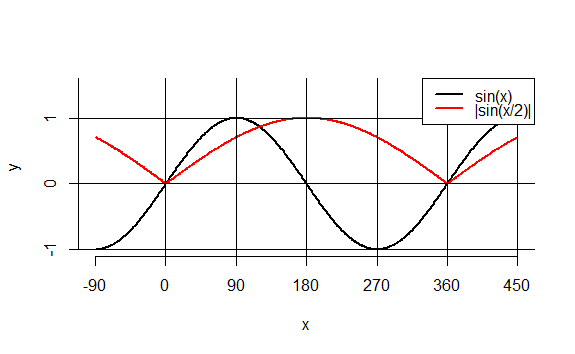
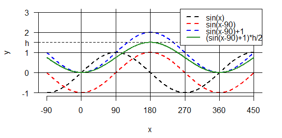
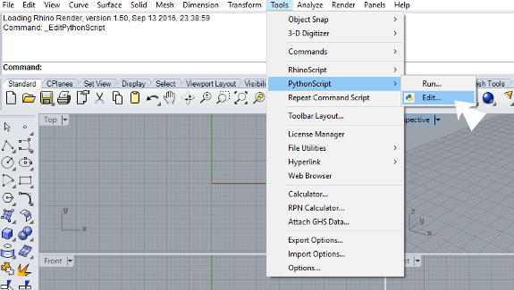
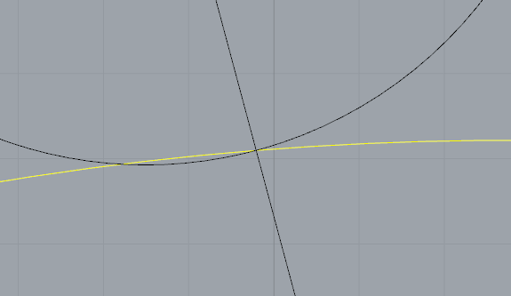
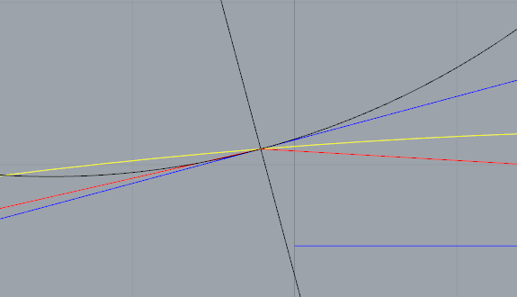
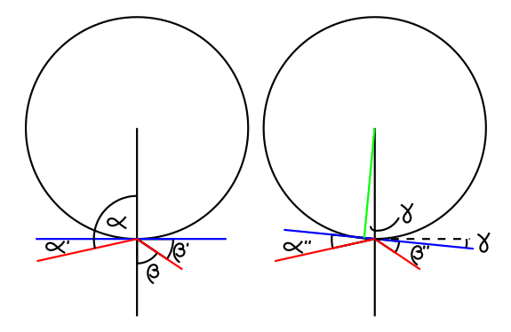

How to draw a cam profile in Rhino with Python
In this tutorial i'm going to show you how to use the programming tools of Rhino to create the profile of a cam. These tools are ideal for automating sequential and repetitive drawing processes such as the process of defining cam profiles. Those who do not know the theory to create the cam profile can check this document.
For this example I will use the following data:
- Base radius of the cam ( R ): 30mm
- Follower's radius ( r ): 5 mm
- Follower's movement: sinusoidal
- Maximum travel of the follower ( h ) = 15 mm
First I begin by defining the points by which the center of the follower should pass using a sinusoidal function. The function I want is one that passes through 0mm in height at 0º, by the maximum height (h) at 180º and return to 0mm at 360º, to be continuous at that point.
A solution might be to use the positive part of the sine function (from 0º to 180º) and expand it horizontally to have the same shape but in the range of 0º to 360º. With that the profile will pass through the desired points but its derivatives will not be continuous at 360º, which can generate dynamic problems.
To solve this, we will use the sine function in the range of -90º and 270º, moving it horizontally and vertically to match the points we want. We can do it first by moving 90º On the horizontal axis (red curve), and then adding one to move it vertically (blue curve). Finally we divide by 2 and multiply by h to obtain the function we are looking for (green curve):
Now we are going to insert this function in Rhino using Python. To do this we open the script editor in Rhino by clicking on /Tools/PythonScript/Editor and create a new blank script:
The first thing to do is to import the libraries that will be used, which will be rhinoscriptsyntax to be able to use the Rhino commands with Python, and math to calculate our sinusoidal function. Then we write a code that calculates the heights of our sinusoidal function for different degrees in the range of 0 to 360 degrees:
import rhinoscriptsyntax as rs
import math
# Range of degrees from 0 to 360 by delta
delta = 15
degrees = range(0,360+delta,delta)
# Create a sin function that goes from 0 to h
# in the interval of 0 to 180 degrees and goes back to 0 from 180 to 360.
h = 15
L = []
for alpha in range(-90,270+delta,delta): #Translates the sin function horizontally
radian_alpha = alpha * math.pi / 180
L.append((round(math.sin(radian_alpha),4) + 1 )* h/2) # Adjust the sin function vertically
In this tutorial I will draw many additional elements to the cam profile just to illustrate graphically the profile drawing process. In the end they can be deleted in the Rhino viewport as well as in the Python script. For this you have to know the id of each element that you want to delete so I recommend to keep them in lists.
I add to the script the variables for the motion of the cam we defined above. I will also create some empty lists for saving values and drawing elements. Later on we will see what each one does in the script:
# Base radius of the cam
R = 30
# Radius of the follower
r = 5
# Rotation center of the cam
p_zero = (0,0,0)
# Drawing colors
red =(255,0,0)
blue = (0,0,255)
magenta = (255,0,255)
yellow = (255,255,0)
green = (0,255,0)
# Lists of points and lines
points = []
profile_line = []
radial_line = []
tangent_points =[]
With these values we can draw the position of the follower for each angle with respect to the cam. The process I use is as follows:
- Create a "for" cycle that goes over the range of degrees.
- Draw a line from the center of rotation to the center of the follower in each angle. To do this I use the Polar function, entering the center of the cam (p_zero), the angle (degree), and the distance from center to center, which is the sum of the base radius of the cam, the radius of the follower And the height of the sinusoidal function for each angle.
- Save the position of the center of the follower for drawing its movement around the wheel later.
- Draw the follower for each position
- Assume the point of contact between the follower and the cam is the intersection of the follower and the radius of the cam.
rs.AddCircle(p_zero,R)
# Draw lines and circles for each degree with the corresponding length
for (i,degree) in enumerate(degrees[:-1]):
# Draw a line from the rotation center to the position of the follower
p_end = rs.Polar(p_zero, degree,R+r+L[i])
radial_line.append(rs.AddLine(p_zero,p_end))
# Save the position of the follower's center for drawing the motion of it
points.append(p_end)
#Draw the follower
circle = rs.AddCircle(p_end,r)
The contact point between the cam and the follower is initially assumed as it is very difficult to know a priori where it is located. At first one supposes that this point is in the line that links the centers of the cam and the follower, but in practice this is not true for every degree. Depending on the size of the follower, the slopes and complexity of the movement of the follower relative to the cam, this point of contact can move slightly to one side or the other. Many times this difference is very small and can be accepted within the design, understanding that the movement of the follower will be slightly distant from the theoretical movement to which it is designed, not being serious especially because in the most important points of the The cam (maximum and minimum) the point of contact usually coincides with the intersection of the radius with the circumference of the follower. In other applications where the precision of this movement is of greater importance, for example, where it is critical to have well-engineered and controlled system forces, this assumption can be not good enough.
Let's draw the cam as it turns out if we assume that the point of contact is always on the line that links the centers.
# Draw the curve of the motion of the follower
points.append(points[0])
rs.AddInterpCurve(points, degree=3, knotstyle=3)
# Draw the curve of the original supposed contact points to show the difference
tangent_points.append(tangent_points[0])
rs.ObjectColor(rs.AddInterpCurve(tangent_points, degree=3, knotstyle=3),yellow)
The image shows the optional construction lines in black and the preliminary cam in yellow. Let's zoom in to see how it is ending up the contact between the cam and follower:
As we see in the zoom of the image for certain positions the resulting cam profile is not tangent to the profile of the follower, but cuts it, which causes that in those positions the cam will be slightly above the expected theoretical position . As I mentioned earlier this may or may not be a problem depending on the application.
Next I will do some calculations to improve the estimation of the contact point and obtain a better profile.
We know that at the point of contact between two tangent curves, the tangent lines to each curve passing through that point are equal. In this case the curves will be the profile of the follower, which I know for each angle, but I do not know its point of contact, and the profile of the cam for which I have an initial assumption that makes relatively small errors but Inadmissible for a given application.
We can suppose that the cam is a polynomial of infinite sides of infinitesimal length, which unite the point of contact between the cam and the follower in an instant, with the point of contact in a moment, and so on. Until completing the profile. Now, if instead of thinking of infinite sides, we think of a finite number of sides equal to the number of partitions of the circumference that we did initially, we will obtain a polygonal cam.
To draw a polygonal cam I'm going to use the same for loop with which I'm calculating the points of the follower's movement and add code to draw a straight line between two consecutive points. By the way the cycle is executed I will need to pre-calculate in each angle the point of contact of the next angle. The following code shows the extra lines that will be added to the for cycle:
#Calc the contact point of the next follower position
p_tangent_next = rs.Polar(p_zero, degrees[i+1],R+L[i+1])
# Draw lines connecting the supposed contact points (profile_line)
profile_line.append(rs.AddLine(p_tangent,p_tangent_next))
rs.ObjectColor(profile_line[i], color=red)
In each position we can draw a tangent to the follower that is perpendicular to the radius of the cam. While we can not draw at this point a tangent to the polygonal profile of the cam, we can take the adjacent sides as a reference to a so-called tangent. In other words, the assumed tangent to the cam passing through that point must have equal angles with both adjacent sides. Then the problem translates to looking at what point of the follower's circumference a tangent is generated that is equal to the assumed tangent, or what is the same, that maintains equal angles with the anterior and posterior sides of the traverse. I am going to add the following code to draw the follower tangents perpendicular to the radius of the cam:
# Draw tangent lines at the supposed contact points
p_end = rs.Polar(p_tangent, degree+90,10)
rs.ObjectColor(rs.AddLine(p_tangent,p_end),blue)
p_end = rs.Polar(p_tangent, degree-90,10)
rs.ObjectColor(rs.AddLine(p_tangent,p_end),blue)
Running the script we get the new lines of the polygon (red) and tangents (blue). The following image is a zoom around one of the follower-follower contact points:
As we see in the image both sides (anterior and posterior) of the polygonal at that point form an angle with the tangent of the circle.
The picture shows the α and β angles, which are the ones we can easily measure with the Rhino functions; α' and β' angles, which are the ones that form the polygonals with the tangent to the follower and we want them to be equals(α'' and β''), for which we rotate the tangent to a γ angle. The angle γ, which indicates how rotated is the contact point on the circumference of the follower, is given by:

However, every time we change the position of the contact point, the orientations of the polygonals will also be modified slightly, so the new solution will not be accurate either. However it will be much more precise that the original assumption and in case of needing greater precision can be iterated until the errors converge to an acceptable error. For our case with one iteration will be enough.
Now I will add code to calculate γ from α and β, and find the new contact point with the Polar function:
# Calculate a new supposed contact points
points = []
for i in xrange(len(degrees)-1]):
# Calculate the difference(angle) between the radial lines and profile lines
alpha = rs.Angle2(radial_line[i],profile_line[i])[0]
beta = rs.Angle2(radial_line[i],profile_line[i-1])[0]
# Calculate the angle were the new contact point is suppossed to be
gamma = 90 - (alpha+beta)/2
# Draw a line and store the end point (new supposed contact point)
p_start = rs.Polar(p_zero, degrees[i],R+L[i]+r)
p_end = rs.Polar(p_start, degrees[i]+180-gamma,r)
rs.ObjectColor(rs.AddLine(p_start,p_end), color=green)
points.append(p_end)
Lastly, we draw the new profile:
# Draw the curve of the cam (interpolating through the suppossed contact points)
points.append(points[0])
rs.ObjectColor(rs.AddInterpCurve(points, degree=3, knotstyle=3),magenta)
As we see in the image the new curve (magenta) is now much better than the first one (yellow). This new curve no longer cuts the profile of the follower (at least not in an appreciable way), as does the yellow curve. If it is not good enough it can be iterated once more, but now using the new points of contact as the points that define the polygon.
Now we have the code that draws the cam ready, if you want remove the code that draws construction elements to get the profile of the cam, and modify the input variables to get other cams.